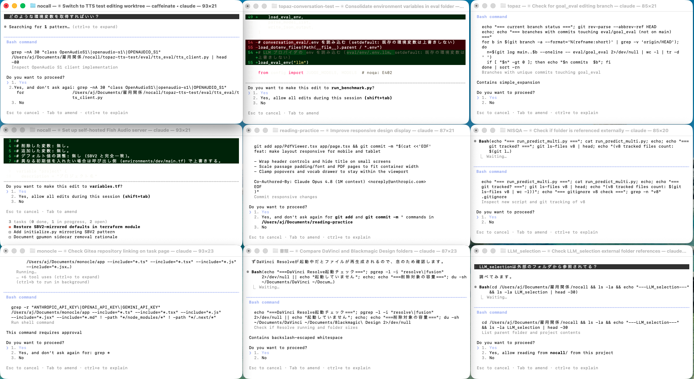

Auto-Authorizing AI Gateway
Don't believe the agent.
The current state of AI use.

Many terminals, many agents, each one paused for the next Enter.
We are completely the bottleneck.
The line between the approvals that matter and the ones that don’t keeps blurring.
A case of an agent disaster.
A real case from this year. The only thing between the agent and the damage was the user’s good judgment — and that turned out not to be enough.
We want AI to do what we want AI to do.
send_money("Bob", 100.00, "rent")
send_money("Eve", 100.00, "rent")
recipient drifted
send_money("Bob", 101.00, "rent")
amount drifted
One character off in the recipient, one dollar off in the amount — it is a different request, and must be rejected. Not approximated.
The limits of OAuth.
To stop an agent from acting outside intent,today's structural option is essentially one.
OAuth makes that restriction granular — one scope per service, one scope per permission.
calendar.read means the agent cannot write.Scope restriction is real. But the boundary it draws is around the service, not around the user’s request.
A new authorization system: PAuth.
How PAuth works.
Two phases. The first fixes what is allowed, once. The second runs the agent and checks every call against that fix.
Plan-time (once, at task start)
Step 1 — LLM turns the user’s prompt into restricted-grammar imperative code.
Step 2 — the code is sliced into NL slices: one symbolic spec per outward call.
Step 3 — slices are compiled into deterministic rules.
Runtime (every agent call)
Enforcer — the agent’s outward call is checked against the rules.
Envelope store — operands resolve from prior signed envelopes of observed tool results, not from the agent.
Default-deny — anything off-plan is rejected.
The LLM is in the loop only at Step 1. Everything past that is deterministic — same input, same output, every time.
An unreliable delivery driver.
The customer’s request is trusted. The plan written from it is trusted.
The driver on the road is not.
We do not trust the driver. We trust the customer’s request and the plan derived from it; the houses do the verifying.
Authorize the action. Not the agent.
The reframe is small to say and large in consequence: stop handing the agent permissions and trusting it to behave, and start checking each call against the user’s task at the moment the agent tries to make it.
OAuth model
Issue a scope up front. Trust the agent within it. The decision happens before the task starts.
PAuth model
Issue nothing in advance. Intercept every call the agent makes. The decision happens at the moment of the call.
The agent is never trusted.
What is checked is the call — can the user’s stated task be a faithful explanation for it?
If yes, permit; if no, deny.
Defense against prompt injection.
Because the slice is fixed at task start — before any tool result is read — anything an injected string later persuades the agent to do is off-slice by construction. Persuade the agent all you want — it can’t act.
read_emails() only.wire_funds(X, $9,999) — not in the slice. REJECT.No prompt-injection-specific detection is needed. The slice was decided before the attack arrived, and the attack does not match the slice.
Experimental results.
- The prompt entered through the agent’s UI is trusted.
- That prompt is correctly translated into restricted-grammar imperative code (Step 1).
AgentDojo: 100 benign tasks + 634 prompt injections.
For every task, PAuth issued exactly the minimum permissions it needed — never more, never less.
Remaining challenges.
question
by the paper
The paper closes edge B
Given a faithful imperative-code translation, PAuth carries well.
What remains is edge A — reliably turning a natural-language prompt into the imperative code that captures it. Close that, and PAuth is ready for production.
The AI gateway.
(Claude Code)
(via MCP)
Independent
Neither the agent nor the SaaS is touched. Safety improves on our own schedule.
Drop-in
Existing Claude Code & MCP workflows continue unchanged — the gateway slots in.
How do we generate faithful imperative code
from natural-language prompts?
This is the one question that decides whether PAuth ships.
Close edge A reliably, and everything downstream is already proven.
Two directions stand out. The next two slides take each one in turn.
1. Specialize the LLM.
Train or fine-tune a model whose only job is to read a natural-language prompt and emit imperative code in the restricted grammar — nothing else.
Why it could work
Smaller distribution, sharper objective. A single-purpose model has fewer ways to go off the rails than a general model running this as a side task.
What it needs
Enough labeled (prompt → restricted-grammar code) pairs for fine-tuning, and a clear distribution of intents that production tasks actually fall within.
2. Validator + retry loop.
Keep a general LLM, but wrap it in a deterministic validator. If the output is not grammar-valid, feed the failing rule back and ask again, until it passes.
The loop
LLM emits code → validator checks the grammar → on failure, the specific rule violated is returned to the LLM → retry. Converge, or give up after N tries.
Why it feels right
The same shape as type-check-driven loops in a proof assistant: the checker rejects, the author reads the error, tries again, converges. The validator plays the role of the type checker.
Less scope.
More science.
Let’s build the science with the ultimate buddy.
What the work needs from us isn’t another scope file. It’s science.